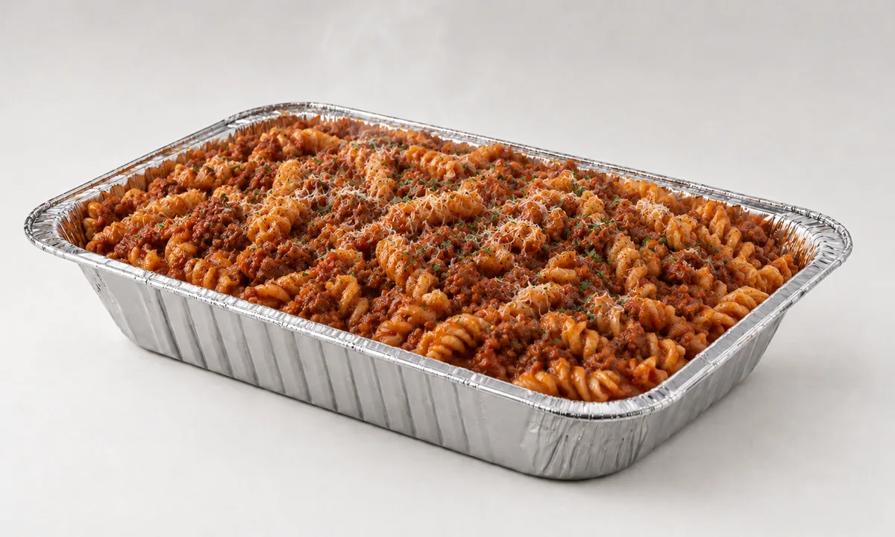

Reels that sell trays of pasta with no ad budget.
Sunú sells shareable pasta trays for four in the north of Aguascalientes, each one with fresh salad and garlic bread. It launched in October 2026 without paid ads: orders come through personal networks, WhatsApp groups and Facebook Marketplace, so the content has to do the selling.
Reels carry most of that weight. They are made in Spanish for a local audience, short enough to post every day, and built from one formula so each new piece is quick to produce and reads as Sunú at a glance.
Tray
to Reel
Every reel runs through the same pipeline. A product still fixes the dish and the tray, the still sets the look of the video generations, and the edit turns short clips into a reel with its own soundtrack and the Sunú end card.

Hook, Food,
Mark
Every reel follows the same three beats. A text card on brand red or white sets the hook, the food moves on screen, and the Sunú mark closes it with “cocina con amor” (cooking with love).
The beats stay fixed and only the line, the dish and the track change. That keeps production fast and makes every reel read as the same brand in the feed.
We Prepare,
You Share
The product is a tray meant for the table, so the reels show the whole path: pasta into boiling water, garlic on the board, tomatoes in the pan, then many hands reaching into one tray. “Nosotros preparamos… Tú compartes” says it in one card.
Other pieces show what comes in the order, a plate with salad and garlic bread next to the tray, or slow the pace down: a stop motion of a tray being served, one short line on a torn paper strip in each frame.
Music
by Brief
The music is original, generated in Suno from a style brief for each mood: light and playful for the everyday reels, warmer and slower for the pieces about care. This one is Sunny Kitchen Swing.
One reel a day for Instagram, produced in weekly batches.
Down from 3 to 5 once the formula was set.
Reach comes from organic posts, WhatsApp groups and Facebook Marketplace.
One Formula,
Every Day
What Went Well?
A Formula Beats a Blank PageFixing the three beats turned each reel into a short list of decisions: one line, one dish, one track. New pieces come out fast and still look like the same brand.
What Could I Have Done Better?
Budget the Take Before the PromptI started at 3 to 5 generations per reel and cut it to 2 to 3. Video generations are the scarce resource, so I now set the final intent first: social content needs fast, meaningful takes, not polished ones.